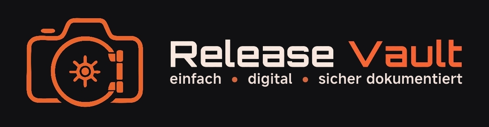

Verträge digital dokumentieren
Release Vault unterstützt Fotografen beim Verwalten von Model- und Property-Releases, Kontakten, Unterschriften und Vertrags-PDFs. Die grundlegende Vertragsverwaltung funktioniert lokal auf dem eigenen Gerät.
Optionale Cloud-Verbindungen
Für Sicherungen und den Geräteabgleich kann der Nutzer Google Drive, Dropbox oder seinen eigenen Nextcloud-Server verbinden. Backups und Synchronisationsdaten werden passwortgeschützt verschlüsselt übertragen.
Google Drive verwendet nur die mit Release Vault angelegten beziehungsweise autorisierten Dateien (drive.file) und zur Übernahme älterer Sicherungen eigene Konfigurationsdaten (drive.appdata). Es ist kein allgemeiner Zugriff auf alle Drive-Dateien vorgesehen. Bei Dropbox sind Dateioperationen auf den eigenen App-Ordner beschränkt. Jeder Nutzer bestätigt seine Verbindung selbst und kann sie wieder trennen.
Bei aktivierter Nextcloud-Synchronisation werden abgeschlossene Verträge zusätzlich als direkt lesbare PDF-Kopien gespeichert. Details zu Daten, Berechtigungen und Speichervorgängen stehen in der Datenschutzerklärung.
Remote-Unterschrift
Die optionale Remote-Funktion ermöglicht eine Unterschrift über einen persönlichen Link. Voraussetzung sind die bestätigten Remote-Nutzungsbedingungen und, bei Nutzung als datenschutzrechtlich Verantwortlicher, ein abgeschlossener AVV.